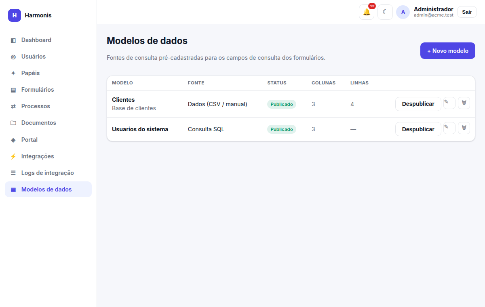
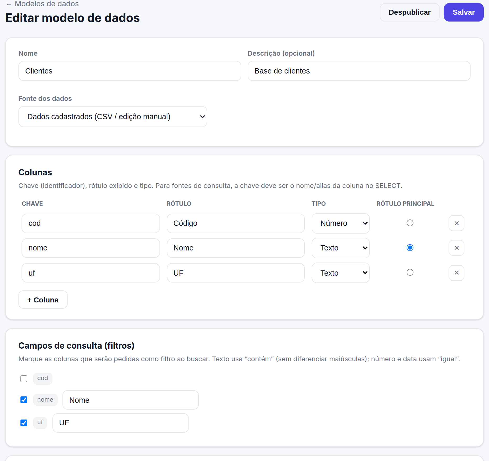
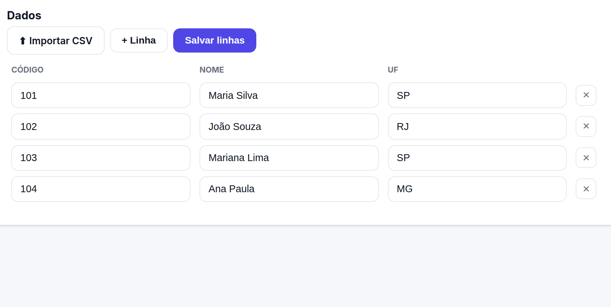
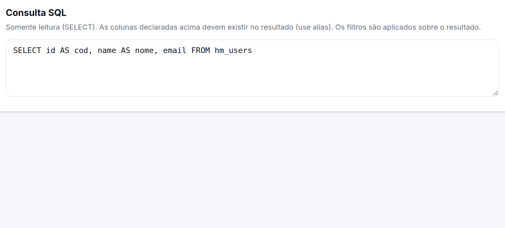

Modelos de dados
Fontes de consulta pré-cadastradas que alimentam os campos de consulta (lookup) dos formulários — por exemplo, uma base de clientes, produtos ou centros de custo.
Ver: datamodels.view. Criar/editar: datamodels.create / datamodels.update. Publicar: datamodels.publish. Excluir: datamodels.delete. Só modelos publicados podem ser vinculados a um formulário.

Fontes de dados
Cada modelo tem uma fonte, escolhida na criação:

| Fonte | De onde vêm os dados |
|---|---|
| Dados cadastrados (CSV / edição manual) | As linhas ficam guardadas no Harmonis. Você as popula importando um arquivo CSV e/ou editando linha a linha na tela. |
| Consulta a outras tabelas do banco (SQL) | O modelo é alimentado por uma consulta SELECT (somente leitura) a outras tabelas do banco da empresa. Os dados não são copiados: a consulta roda a cada busca. |
Colunas e rótulo principal
Defina as colunas do modelo. Cada coluna tem:
- Chave — identificador (letras, números e “_”). Nas fontes de consulta SQL, a chave deve ser o nome ou alias da coluna no SELECT.
- Rótulo — nome exibido na lista de resultados.
- Tipo — Texto, Número ou Data (define como o filtro compara).
- Rótulo principal — a coluna usada como texto do registro selecionado no formulário (ex.: o nome do cliente).
Campos de consulta (filtros)
Marque quais colunas serão pedidas como filtro na hora da busca. O operador é fixo por tipo e não diferencia maiúsculas:
| Tipo da coluna | Como filtra |
|---|---|
| Texto | Contém o que foi digitado (busca parcial). |
| Número | Igual ao valor informado. |
| Data | Igual à data informada. |
Acentos são considerados (ex.: “joao” não encontra “João”).
Dados (fonte CSV / manual)

- Salve o modelo primeiro (para poder cadastrar linhas).
- Importar CSV — a primeira linha do arquivo é o cabeçalho; cada coluna é associada à do modelo pelo rótulo ou pela chave (sem diferenciar acento/maiúsculas). As linhas são adicionadas às existentes. Aceita separador “,” ou “;”.
- + Linha / edição na grade — inclua ou ajuste valores manualmente.
- Salvar linhas — grava o conteúdo da grade (substitui o conjunto atual).
Consulta SQL (fonte de consulta)

A consulta precisa ser um SELECT (um único comando). Comandos que alteram dados são recusados. As colunas declaradas devem existir no resultado — use alias quando necessário (ex.: SELECT id AS cod, nome FROM clientes). Os filtros são aplicados sobre o resultado da consulta.
Publicar
Enquanto estiver em rascunho, o modelo não aparece para vincular a formulários. Ao Publicar, ele fica disponível no construtor (campo Consulta). Exige ao menos uma coluna (e, para fontes de consulta, a consulta SQL preenchida).
Usar em um formulário
No construtor, adicione um campo Consulta (modelo de dados), escolha o modelo publicado e defina a seleção (única ou múltipla). Veja Campo de consulta (lookup) para o comportamento no preenchimento.